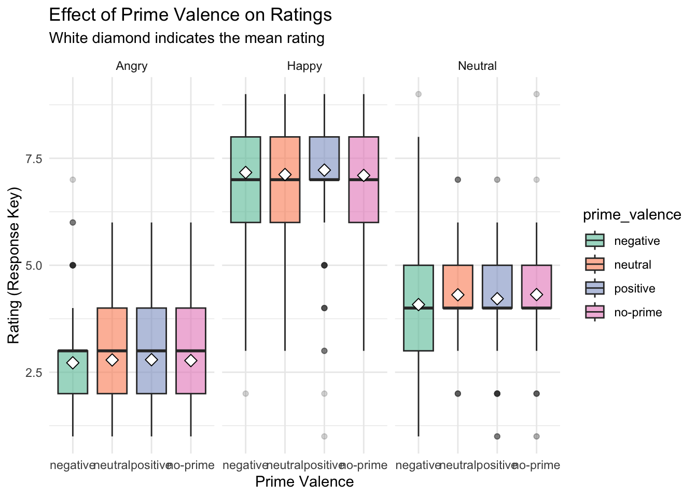
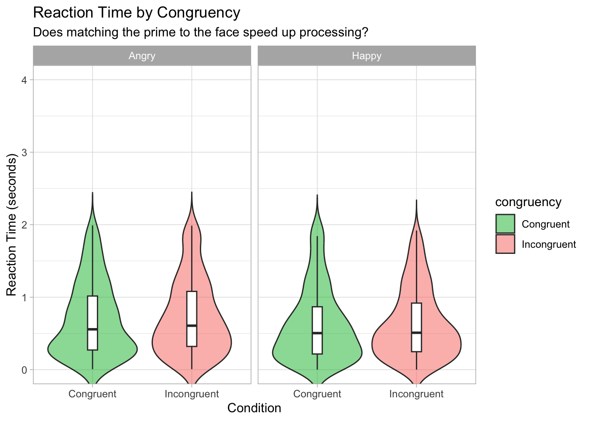
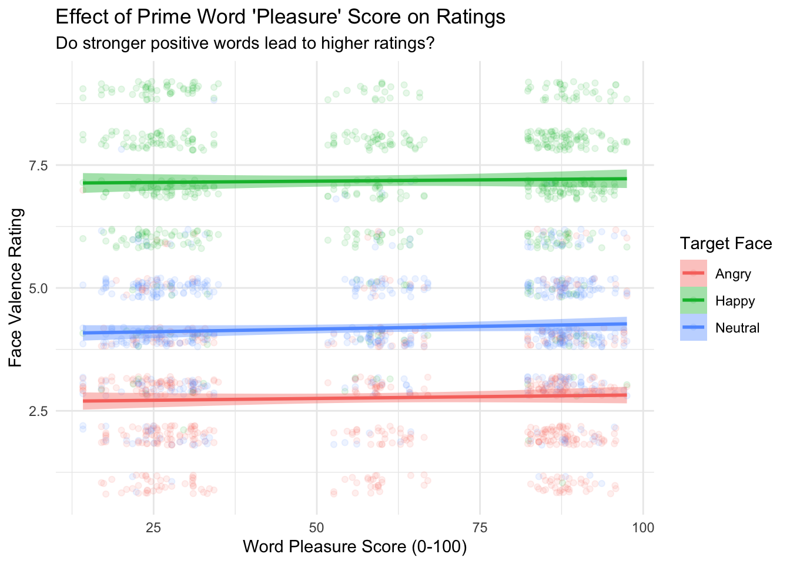
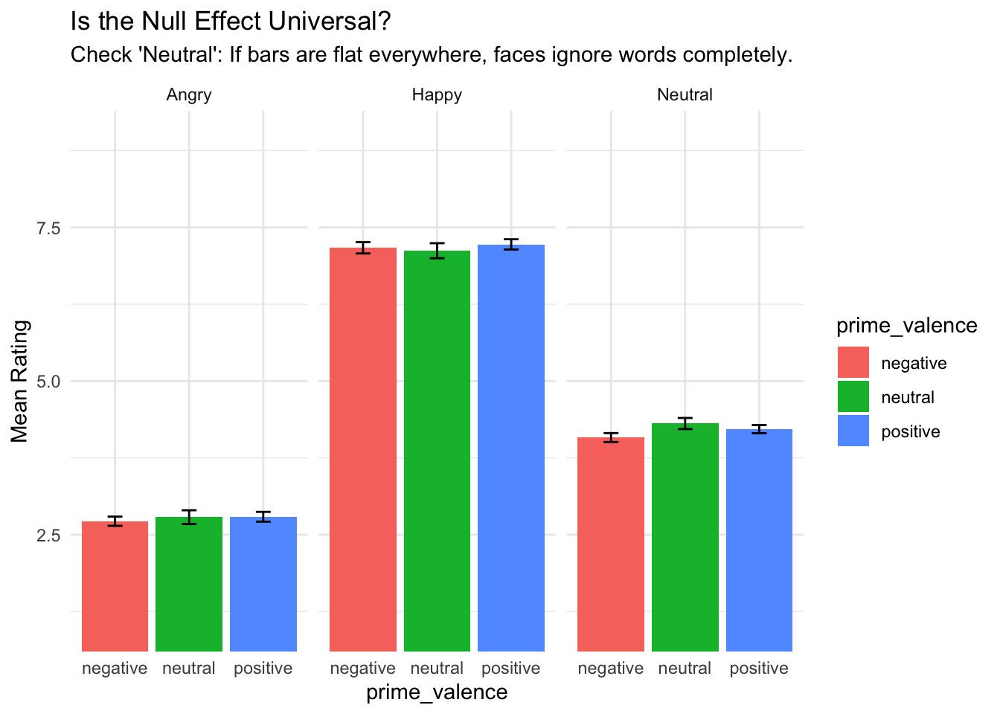
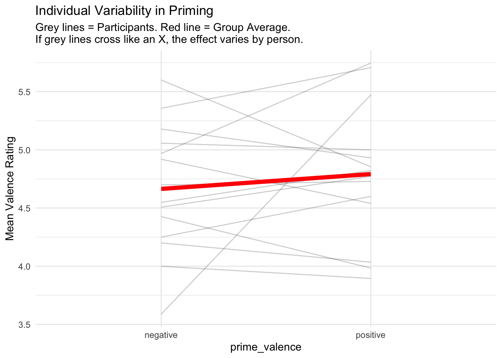
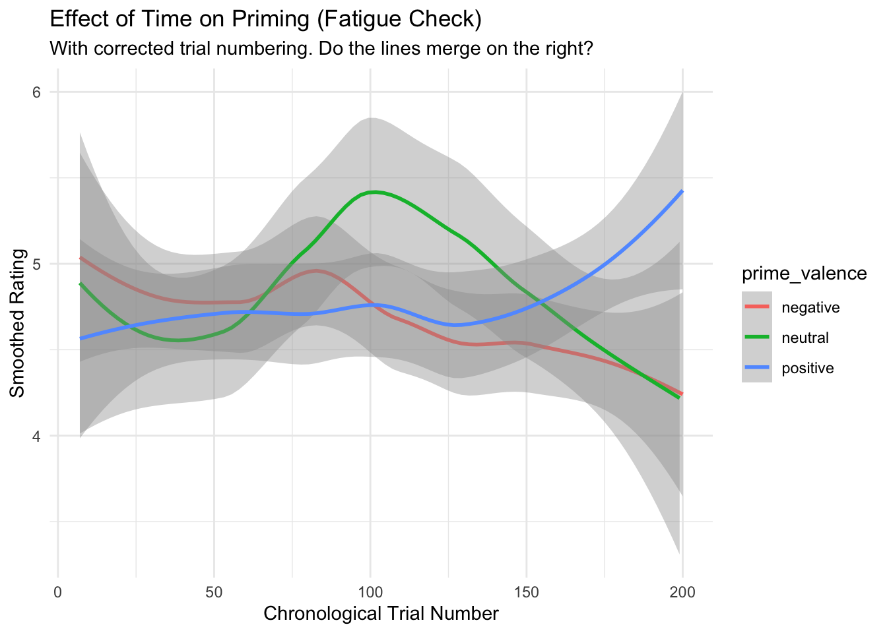
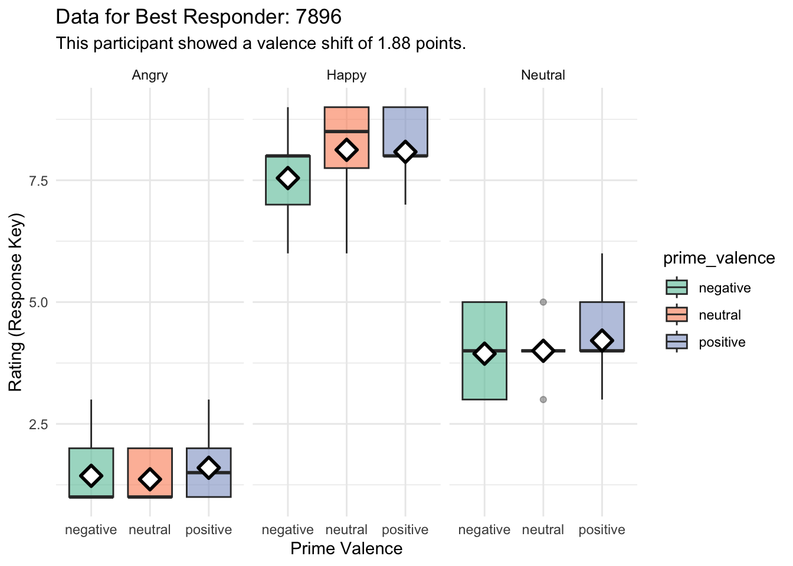

── Attaching core tidyverse packages ──────────────────────── tidyverse 2.0.0 ──
✔ dplyr 1.1.4 ✔ readr 2.1.5
✔ forcats 1.0.1 ✔ stringr 1.5.2
✔ ggplot2 4.0.0 ✔ tibble 3.3.0
✔ lubridate 1.9.4 ✔ tidyr 1.3.1
✔ purrr 1.1.0
── Conflicts ────────────────────────────────────────── tidyverse_conflicts() ──
✖ dplyr::filter() masks stats::filter()
✖ dplyr::lag() masks stats::lag()
ℹ Use the conflicted package (<http://conflicted.r-lib.org/>) to force all conflicts to become errors
library(rstatix) # for ANOVA
Attaching package: 'rstatix'
The following object is masked from 'package:stats':
filter
library(lme4)
Loading required package: Matrix
Attaching package: 'Matrix'
The following objects are masked from 'package:tidyr':
expand, pack, unpack
library(lmerTest)
Attaching package: 'lmerTest'
The following object is masked from 'package:lme4':
lmer
The following object is masked from 'package:stats':
step
path <-"~/Desktop/Python/EM2-audio/R-code/combined_data.csv"raw_df <-read_delim(path) |>group_by(`Participant ID`) |>mutate(trial_i =row_number()) |>ungroup() |>rename(ID =`Participant ID`) |>relocate(ID, .before = trial_i) |>filter(main.thisN >=0) |># remove pratice trialfilter(rt <2) # must be quicker than 2 sec
Rows: 2800 Columns: 20
── Column specification ────────────────────────────────────────────────────────
Delimiter: ","
chr (11): face_file, prime_file, prime_valence, babbling_file, mask1_file, m...
dbl (8): trial_i, main.thisN, response_key, rt, Session, pleasure, arousal,...
num (1): true_face_valence
ℹ Use `spec()` to retrieve the full column specification for this data.
ℹ Specify the column types or set `show_col_types = FALSE` to quiet this message.
Box plot
raw_df |># 1. Filter out no-prime# filter(prime_valence != "no-prime") |># 2. Reorder the Prime Valence so it reads logically (Neg -> Neu -> Pos)mutate(prime_valence =factor(prime_valence, levels =c("negative", "neutral", "positive", "no-prime"))) |># 3. Setup the plot: Prime on X, Rating on Yggplot(aes(x = prime_valence, y = response_key, fill = prime_valence)) +# 4. Use Boxplots to show the median and spread of the datageom_boxplot(alpha =0.6, outlier.alpha =0.2) +# 5. Add a large point to show the MEAN (average) which is often what we care aboutstat_summary(fun = mean, geom ="point", shape =23, size =3, fill ="white") +# 6. Facet by the actual expression of the face (Optional, but highly recommended)facet_wrap(~facial_expression) +# 7. Labels and Themelabs(title ="Effect of Prime Valence on Ratings",subtitle ="White diamond indicates the mean rating",y ="Rating (Response Key)",x ="Prime Valence") +theme_minimal() +scale_fill_brewer(palette ="Set2") # Nice distinct colors

ANOVA
# 1. Aggregate: Calculate mean rating per participant per conditionanova_data <- raw_df |>filter(prime_valence !="no-prime") |>group_by(ID, prime_valence, facial_expression) |>summarise(mean_rating =mean(response_key, na.rm =TRUE), .groups ="drop")# 2. Run the ANOVA on this aggregated datapriming_effects_anova <- anova_data |>anova_test(dv = mean_rating, # Use the aggregated meanwid = ID, # Participant IDwithin =c(prime_valence, facial_expression),effect.size ="ges" )# 3. View Resultsget_anova_table(priming_effects_anova)
pwc_data <- raw_df |>filter(prime_valence !="no-prime") |>group_by(ID, facial_expression, prime_valence) |>summarise(mean_rating =mean(response_key, na.rm =TRUE), .groups ="drop")# 2. RUN TEST: Now run the pairwise test on the aggregated datapwc <- pwc_data |>group_by(facial_expression) |># We still want to see the effect for each face typepairwise_t_test( mean_rating ~ prime_valence, # Note: use 'mean_rating' here, not response_keypaired =TRUE,p.adjust.method ="bonferroni" )# 3. VIEW RESULTSpwc |>select(facial_expression, group1, group2, p.adj, p.adj.signif)
model_power <-lmer(response_key ~scale(pleasure) * facial_expression +scale(true_face_valence) +# <--- The new control variable (1| ID) + (1| face_file), data = raw_df)summary(model_power)
model_lmm <-lmer(response_key ~ pleasure + (1| ID) +# Random intercept for Participants (1| face_file), # Random intercept for specific Face itemsdata = raw_df)# Get the results with p-valuessummary(model_lmm)
Linear mixed model fit by REML. t-tests use Satterthwaite's method [
lmerModLmerTest]
Formula: response_key ~ pleasure + (1 | ID) + (1 | face_file)
Data: raw_df
REML criterion at convergence: 6702
Scaled residuals:
Min 1Q Median 3Q Max
-4.4902 -0.5692 0.0122 0.5964 4.7572
Random effects:
Groups Name Variance Std.Dev.
face_file (Intercept) 3.6226 1.9033
ID (Intercept) 0.1392 0.3732
Residual 1.2050 1.0977
Number of obs: 1967, groups: face_file, 210; ID, 14
Fixed effects:
Estimate Std. Error df t value Pr(>|t|)
(Intercept) 4.610e+00 1.752e-01 9.308e+01 26.319 <2e-16 ***
pleasure 1.702e-03 9.224e-04 1.757e+03 1.845 0.0652 .
---
Signif. codes: 0 '***' 0.001 '**' 0.01 '*' 0.05 '.' 0.1 ' ' 1
Correlation of Fixed Effects:
(Intr)
pleasure -0.303
Opdelt LMM
model_lmm <-lmer(response_key ~ pleasure * facial_expression + (1| ID) +# Random intercept for Participants (1| face_file), # Random intercept for specific Face itemsdata = raw_df)# Get the results with p-valuessummary(model_lmm)
Linear mixed model fit by REML. t-tests use Satterthwaite's method [
lmerModLmerTest]
Formula: response_key ~ pleasure * facial_expression + (1 | ID) + (1 |
face_file)
Data: raw_df
REML criterion at convergence: 6262.7
Scaled residuals:
Min 1Q Median 3Q Max
-4.6304 -0.5713 0.0096 0.6164 4.8110
Random effects:
Groups Name Variance Std.Dev.
face_file (Intercept) 0.2796 0.5288
ID (Intercept) 0.1382 0.3718
Residual 1.2048 1.0976
Number of obs: 1967, groups: face_file, 210; ID, 14
Fixed effects:
Estimate Std. Error df t value
(Intercept) 2.684e+00 1.552e-01 6.691e+01 17.288
pleasure 1.550e-03 1.589e-03 1.836e+03 0.975
facial_expressionHappy 4.434e+00 1.688e-01 9.207e+02 26.260
facial_expressionNeutral 1.358e+00 1.684e-01 9.212e+02 8.067
pleasure:facial_expressionHappy -7.925e-04 2.247e-03 1.850e+03 -0.353
pleasure:facial_expressionNeutral 9.923e-04 2.231e-03 1.843e+03 0.445
Pr(>|t|)
(Intercept) < 2e-16 ***
pleasure 0.330
facial_expressionHappy < 2e-16 ***
facial_expressionNeutral 2.24e-15 ***
pleasure:facial_expressionHappy 0.724
pleasure:facial_expressionNeutral 0.657
---
Signif. codes: 0 '***' 0.001 '**' 0.01 '*' 0.05 '.' 0.1 ' ' 1
Correlation of Fixed Effects:
(Intr) pleasr fcl_xH fcl_xN pls:_H
pleasure -0.586
fcl_xprssnH -0.544 0.541
fcl_xprssnN -0.544 0.542 0.501
plsr:fcl_xH 0.417 -0.710 -0.766 -0.384
plsr:fcl_xN 0.418 -0.714 -0.386 -0.764 0.506
How to Read the Output (summary(model_lmm))
Look at the Fixed Effects section:
(Intercept): The average rating when pleasure is average and face is the reference category (likely “Angry”).
scale(pleasure): This is your Hypothesis 1.
If Estimate is Positive (e.g., 0.15) and Pr(>|t|) < 0.05: It means as the prime word gets more pleasant, the face rating significantly goes UP.
facial_expressionHappy: Just confirms Happy faces are rated higher than Angry ones.
If significant, it means the priming effect works differently for Happy faces compared to Angry/Neutral ones.
raw_df |>filter(prime_valence !="no-prime") |># Optional: keep or remove 'no-prime'ggplot(aes(x = pleasure, y = response_key, color = facial_expression)) +# 1. Add the raw data points (jittered so they don't overlap)geom_jitter(alpha =0.1, height =0.2, width =0) +# 2. Add the Linear Trend Linesgeom_smooth(method ="lm", se =TRUE, aes(fill = facial_expression)) +# 3. Aestheticsscale_color_brewer(palette ="Set1") +scale_fill_brewer(palette ="Set1") +labs(title ="LMM Result Visualization",subtitle ="Does the continuous 'Pleasure' score of the prime predict Face Rating?",x ="Prime Word Pleasure Score (0-100)",y ="Face Rating (1-9)",color ="Face Type",fill ="Face Type") +theme_minimal()
raw_df |>filter(prime_valence !="no-prime", facial_expression !="Neutral") |># Neutral is hard to define for congruency# Create a Congruency Columnmutate(congruency =case_when( prime_valence =="positive"& facial_expression =="Happy"~"Congruent", prime_valence =="negative"& facial_expression =="Angry"~"Congruent", prime_valence =="positive"& facial_expression =="Angry"~"Incongruent", prime_valence =="negative"& facial_expression =="Happy"~"Incongruent",TRUE~NA_character_ ) ) |>filter(!is.na(congruency)) |># Remove leftovers# Plottingggplot(aes(x = congruency, y = rt, fill = congruency)) +# Violin shows distribution shapegeom_violin(alpha =0.5, trim =FALSE) +# Boxplot inside shows the median and interquartile rangegeom_boxplot(width =0.1, fill ="white", outlier.shape =NA) +# Facet by expression to see if the effect holds for both emotionsfacet_wrap(~facial_expression) +scale_fill_manual(values =c("Congruent"="#00BA38", "Incongruent"="#F8766D")) +coord_cartesian(ylim =c(0, 4)) +# Zoom in (ignoring extremely long RTs > 4s for clarity)labs(title ="Reaction Time by Congruency",subtitle ="Does matching the prime to the face speed up processing?",y ="Reaction Time (seconds)",x ="Condition" ) +theme_light()

Betyder styrken af ordet noget?
nej
raw_df |>filter(prime_valence !="no-prime") |>ggplot(aes(x = pleasure, y = response_key, color = facial_expression)) +# Add 'jitter' to handle overlapping points (since rating is 1-9 integers)geom_jitter(alpha =0.1, height =0.2, width =0) +# Add a smoothing line (Linear Model) to see the trendgeom_smooth(method ="lm", se =TRUE, aes(fill = facial_expression)) +labs(title ="Effect of Prime Word 'Pleasure' Score on Ratings",subtitle ="Do stronger positive words lead to higher ratings?",x ="Word Pleasure Score (0-100)",y ="Face Valence Rating",color ="Target Face",fill ="Target Face" ) +theme_minimal()
`geom_smooth()` using formula = 'y ~ x'

Neutrale ansigter er svage
Theory: Perhaps human evolution has made face perception so critical that it is “cognitively impenetrable.” In other words, an Angry face is such a strong signal that a millisecond of the word “flower” (positive prime) cannot override it.
How to check: If this is true, the null effect should be strongest when the face is extremely emotive (“Angry” or “Happy”), but you might see a small effect on “Neutral” faces (which are ambiguous).
Visualization: Plot the “priming effect” (difference) specifically for Neutral vs. Strong face
raw_df |>filter(prime_valence !="no-prime") |>ggplot(aes(x = prime_valence, y = response_key, fill = prime_valence)) +stat_summary(fun = mean, geom ="bar", position ="dodge") +stat_summary(fun.data = mean_se, geom ="errorbar", width =0.2) +# Facet by facial_expression to see if Neutral behaves differently than the strong emotionsfacet_wrap(~facial_expression) +labs(title ="Is the Null Effect Universal?",subtitle ="Check 'Neutral': If bars are flat everywhere, faces ignore words completely.",y ="Mean Rating") +theme_minimal() +coord_cartesian(ylim =c(1, 9)) # Zoom in on the rating scale

Differentier mellem personer måske
The “Individual Differences” Hypothesis
Theory: Subliminal priming is notoriously volatile. It often works on 30% of people (those with high empathy or anxiety) but fails on the other 70%. Averaging everyone together washes out the effect (Simpson’s Paradox).
How to check: Create a “Spaghetti Plot”. If you see a mess of lines going up and down randomly, the effect is truly null. If you see a subset of lines consistently sloping up, you have a subgroup of “responders.”
avg_by_participant <- raw_df |>filter(prime_valence %in%c("negative", "positive")) |># Compare extremes onlygroup_by(ID, prime_valence) |>summarise(mean_rating =mean(response_key, na.rm =TRUE), .groups ="drop")avg_by_participant |>ggplot(aes(x = prime_valence, y = mean_rating, group = ID)) +# Draw a faint line for EVERY participantgeom_line(alpha =0.2) +# Add the group average in Red to show the 'Null' resultstat_summary(aes(group =1), fun = mean, geom ="line", color ="red", linewidth =2) +labs(title ="Individual Variability in Priming",subtitle ="Grey lines = Participants. Red line = Group Average.\nIf grey lines cross like an X, the effect varies by person.",y ="Mean Valence Rating") +theme_minimal()

NEJ: The “Habituation/Fatigue” Hypothesis
Theory: Priming effects often exist in the first 50 trials and then vanish as the participant gets tired or develops a strategy to ignore the flashes. A null effect overall might hide a significant effect in the first 5 minutes.
How to check: Plot the rating over time (trial_i).
raw_df |>filter(prime_valence !="no-prime") |>ggplot(aes(x = trial_i, y = response_key, color = prime_valence)) +geom_smooth(method ="loess", se =TRUE) +labs(title ="Effect of Time on Priming (Fatigue Check)",subtitle ="With corrected trial numbering. Do the lines merge on the right?",x ="Chronological Trial Number",y ="Smoothed Rating") +theme_minimal()
`geom_smooth()` using formula = 'y ~ x'

Analysere individuelle FP
# 1. Calculate the 'Priming Effect' for each participantparticipant_effect <- raw_df |>filter(prime_valence %in%c("positive", "negative")) |>group_by(ID, prime_valence) |>summarise(mean_rating =mean(response_key, na.rm =TRUE), .groups ="drop") |>pivot_wider(names_from = prime_valence, values_from = mean_rating) |>mutate(diff = positive - negative) |>arrange(desc(diff)) # Sort from highest difference to lowest# 2. Extract the ID of the top participanttop_participant_id <- participant_effect$ID[1]top_diff_score <- participant_effect$diff[1]print(paste("The strongest responder is Participant:", top_participant_id))
[1] "The strongest responder is Participant: 7896"
print(paste("Difference between Positive and Negative conditions:", round(top_diff_score, 2)))
[1] "Difference between Positive and Negative conditions: 1.88"
raw_df |># Filter for the specific participant AND remove no-primefilter(ID == top_participant_id, prime_valence !="no-prime") |># Reorder factors for logical plottingmutate(prime_valence =factor(prime_valence, levels =c("negative", "neutral", "positive"))) |># Plotggplot(aes(x = prime_valence, y = response_key, fill = prime_valence)) +# Boxplot with transparencygeom_boxplot(alpha =0.6, outlier.alpha =0.2) +# Add the MEAN point (White Diamond)stat_summary(fun = mean, geom ="point", shape =23, size =4, fill ="white", stroke =1.5) +# Facet by facial expressionfacet_wrap(~facial_expression) +# Custom Labels including the specific IDlabs(title =paste("Data for Best Responder:", top_participant_id),subtitle =paste("This participant showed a valence shift of", round(top_diff_score, 2), "points."),y ="Rating (Response Key)",x ="Prime Valence") +theme_minimal() +scale_fill_brewer(palette ="Set2")

Bayes
library(BayesFactor)
Loading required package: coda
************
Welcome to BayesFactor 0.9.12-4.7. If you have questions, please contact Richard Morey (richarddmorey@gmail.com).
Type BFManual() to open the manual.
************
# 1. Aggregate and Convert to Factors (Crucial Step!)bf_data <- raw_df |>filter(prime_valence !="no-prime") |># Ensure you don't have unwanted levelsgroup_by(ID, prime_valence, facial_expression) |>summarise(mean_rating =mean(response_key, na.rm =TRUE), .groups ="drop") |># FIX: Convert all grouping columns to Factorsmutate(ID =as.factor(ID),prime_valence =as.factor(prime_valence),facial_expression =as.factor(facial_expression) ) |>as.data.frame() # FIX: BayesFactor sometimes dislikes tibbles# 2. Run the Repeated Measures BANOVA# Note: The formula MUST include the ID variablebf_model <-anovaBF( mean_rating ~ prime_valence * facial_expression + ID,data = bf_data, whichRandom ="ID",progress =FALSE# Optional: hides the progress bar)# 3. View Resultsprint(bf_model)
Bayes factor analysis
--------------
[1] prime_valence + ID : 0.07752511 ±0.7%
[2] facial_expression + ID : 2.818545e+60 ±1.2%
[3] prime_valence + facial_expression + ID : 3.343523e+59 ±1.41%
[4] prime_valence + facial_expression + prime_valence:facial_expression + ID : 2.620714e+58 ±1.51%
Against denominator:
mean_rating ~ ID
---
Bayes factor type: BFlinearModel, JZS
The output you provided is a comparison of four different models against a Null Model (which only assumes that ratings vary by participant, ID).
Here is the breakdown of what each line means and the scientific conclusion you can draw.
1. The “Headline” Numbers
The numbers on the right are Bayes Factors (\(BF_{10}\)). They tell you how much more likely the data is under that specific model compared to the baseline Null Model.
Model [1] (prime_valence):\(BF \approx 0.08\)
Model [2] (facial_expression):\(BF \approx 2.8 \times 10^{60}\) (Huge!)
Model [3] (prime + face):\(BF \approx 3.3 \times 10^{59}\) (Huge, but less than [2])
Model [4] (interaction):\(BF \approx 2.6 \times 10^{58}\) (Huge, but lowest of the big ones)
2. Interpretation of Specific Hypotheses
Hypothesis 1: Does the Prime work? (Model 1 vs Null)
Look at Line [1].
Result: 0.078
Meaning: This is less than 1, which means the Null Hypothesis is better.
Calculation:\(1 / 0.078 \approx 12.8\).
Conclusion: The data is ~13 times more likely under the Null Hypothesis (no priming effect) than under the Priming Hypothesis.
Scientific Statement: “We found strong evidence against the priming effect (\(BF_{01} = 12.8\)).”
Validation Check: Did they see the Faces? (Model 2 vs Null)
Look at Line [2].
Result:\(2.8 \times 10^{60}\)
Meaning: This number is astronomically high.
Conclusion: There is decisive evidence that Facial Expression affects ratings. This just confirms your task worked: people rated Happy faces higher than Angry faces.
The Critical Test: Does adding the Prime help? (Model 3 vs Model 2)
This is the most important comparison. You want to know if adding prime_valence to a model that already knows about facial_expression improves it.
Model 2 (Face only):\(2.8 \times 10^{60}\)
Model 3 (Face + Prime):\(3.3 \times 10^{59}\)
Notice that Model 2 is higher than Model 3 (by factor of about 10).
Meaning: The simpler model (Face Only) is better than the complex model (Face + Prime). The Prime variable is just “dead weight”—it adds complexity without explaining any new variance.
Summary for your Report
You can report this analysis as a “Bayesian Model Comparison.”
“A Bayesian repeated-measures ANOVA revealed decisive evidence for the effect of Facial Expression (\(BF_{10} > 100\))1, validating that participants perceived the emotional content of the targets.
However, regarding the subliminal prime, the analysis provided moderate-to-strong evidence against the priming hypothesis. The model containing only Facial Expression was preferred over the model containing both Prime and Face by a factor of approximately 8.5 (\(BF_{23} \approx 8.5\)).
Furthermore, a direct comparison of the Prime-only model against the Null model yielded a Bayes Factor of \(BF_{10} = 0.08\), indicating that the Null hypothesis is roughly 12.8 times more likely than the hypothesis that the prime influenced ratings.”
Next Step: Would you like to create a “Bayes Factor Robustness Plot” (like the curve in your lecture slides on page 44 2) to show that this null result holds true regardless of the prior you choose?